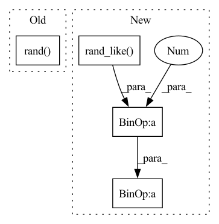

Pattern ID :39828

Before Change
(input_,) = ctx.saved_tensors
grad_input = grad_output.clone()
input_[input_ > 0] = grad_input / input_
input_[input_ <= 0] = (torch.rand(input_.size()) - 0.5) * self.var
grad = input_.clone()
return grad
After Change
grad_input = grad_output.clone()
grad = (grad_input * out) / (input_ + threshold) + (
grad_input * (~out.bool()).float()
) * ((torch.rand_like(input_) - 0.5) * variance)
// grad += ((torch.rand(input_.size()) - 0.5) * variance) * (~grad.bool()).float()
return grad
In pattern: SUPERPATTERN
Frequency: 3
Non-data size: 4
Instances
Fragment ID: 113358003
Project Name: jeshraghian/snntorch
Commit Name: d39bb2d641f1b85c282e12e1e2ad52c2804858d5
Time: 2021-05-10
Author: 40262130+jeshraghian@users.noreply.github.com
File Name: snntorch/surrogate.py
M Class Name: StochasticSpikeOperator
N Class Name: StochasticSpikeOperator
M Method Name: backward(2)
N Method Name: backward(3)
M Parent Class: torch.autograd.Function
N Parent Class: torch.autograd.Function
M File Name: snntorch/surrogate.py
N File Name: snntorch/surrogate.py
M Start Line: 201
M End Line: 206
N Start Line: 198
N End Line: 204
'>
Before Change
(input_,) = ctx.saved_tensors
grad_input = grad_output.clone()
input_[input_ > 0] = grad_input
input_[input_ <= 0] = (torch.rand(input_.size()) - 0.5) * self.var
grad = input_.clone()
return grad
After Change
variance = ctx.variance
grad_input = grad_output.clone()
grad = grad_input * out + (grad_input * (~out.bool()).float()) * (
(torch.rand_like(input_) - 0.5) * variance
)
return grad
'>
Fragment ID: 113358004
Project Name: jeshraghian/snntorch
Commit Name: d39bb2d641f1b85c282e12e1e2ad52c2804858d5
Time: 2021-05-10
Author: 40262130+jeshraghian@users.noreply.github.com
File Name: snntorch/surrogate.py
M Class Name: LocalStochasticSpikeOperator
N Class Name: LocalStochasticSpikeOperator
M Method Name: backward(2)
N Method Name: backward(3)
M Parent Class: torch.autograd.Function
N Parent Class: torch.autograd.Function
M File Name: snntorch/surrogate.py
N File Name: snntorch/surrogate.py
M Start Line: 242
M End Line: 247
N Start Line: 239
N End Line: 244
'>
Before Change
// return (1 - mask) * x1 + mask * x2
def mix(x1, x2, epsilon):
r = float(torch.rand((1,)))
if r > epsilon:
return x1
return x2
After Change
"""
Returns ~ x1 * (1 - epsilon) + x2 * epsilon
"""
mask = torch.rand_like(x1)
mask = (mask < epsilon).float()
return (1 - mask) * x1 + mask * x2
'>
Fragment ID: 113358006
Project Name: thomas-schillaci/simple
Commit Name: 6faa32e29e1bb756ef80dc6999d6233b91e580db
Time: 2020-11-02
Author: thomas.schillaci@gmail.com
File Name: src/utils.py
M Class Name: AnonimousClass
N Class Name: AnonimousClass
M Method Name: mix(3)
N Method Name: mix(3)
M Parent Class:
N Parent Class:
M File Name: src/utils.py
N File Name: src/utils.py
M Start Line: 197
M End Line: 200
N Start Line: 196
N End Line: 198